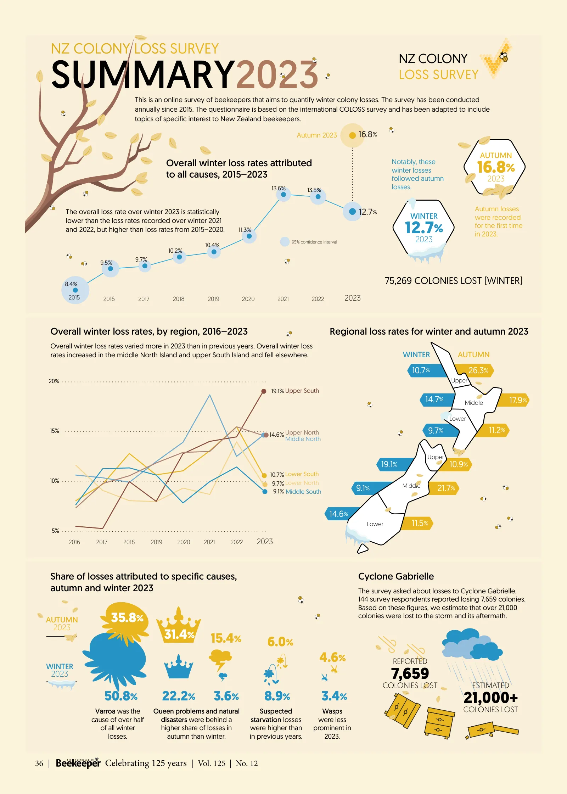

Middle
21.7%
9.1%
10.9%
19.1%
11.5%
14.6%
17.9%
14.7%
11.2%
9.7%
The overall loss rate over winter 2023 is statistically
lower than the loss rates recorded over winter 2021
and 2022, but higher than loss rates from 2015–2020.
Overall winter loss rates attributed
to all causes, 2015–2023
NZ COLONY LOSS SURVEY
SUMMARY2023
This is an online survey of beekeepers that aims to quantify winter colony losses. The survey has been conducted
annually since 2015. The questionnaire is based on the international COLOSS survey and has been adapted to include
topics of specific interest to New Zealand beekeepers.
95% confidence interval
NZ COLONY
LOSS SURVEY
Autumn losses
were recorded
for the first time
in 2023.
Notably, these
winter losses
followed autumn
losses.
2015
2016
9.5%
8.4%
2017
9.7%
2018
2019
10.2%
10.4%
2020
11.3%
19.1%
14.6%
10.7%
9.7%
9.1%
2021
2022
13.6%
13.5%
2023
2023
12.7%
16.8%
2023
12.7%
WINTER
2023
16.8%
2023
AUTUMN
26.3%
10.7%
AUTUMN
WINTER
Overall winter loss rates varied more in 2023 than in previous years. Overall winter loss
rates increased in the middle North Island and upper South Island and fell elsewhere.
Overall winter loss rates, by region, 2016–2023
Regional loss rates for winter and autumn 2023
10%
15%
5%
20%
Middle South
Middle North
Middle
Lower North
Lower
Upper South
Upper
Lower South
Lower
Upper North
Upper
2016
2017
2018
2019
2020
2021
2022
Share of losses attributed to specific causes,
autumn and winter 2023
22.2%
3.6%
15.4%
8.9%
6.0%
3.4%
4.6%
Suspected
starvation losses
were higher than
in previous years.
Wasps
were less
prominent in
2023.
Varroa was the
cause of over half
of all winter
losses.
Queen problems and natural
disasters were behind a
higher share of losses in
autumn than winter.
2023
AUTUMN
The survey asked about losses to Cyclone Gabrielle.
144 survey respondents reported losing 7,659 colonies.
Based on these figures, we estimate that over 21,000
colonies were lost to the storm and its aftermath.
Cyclone Gabrielle
50.8%
31.4%
35.8%
2023
WINTER
75,269 COLONIES LOST (WINTER)
REPORTED
7,659
COLONIES LOST
ESTIMATED
21,000+
COLONIES LOST
Autumn 2023
36 |
Celebrating 125 years | Vol. 125 | No. 12